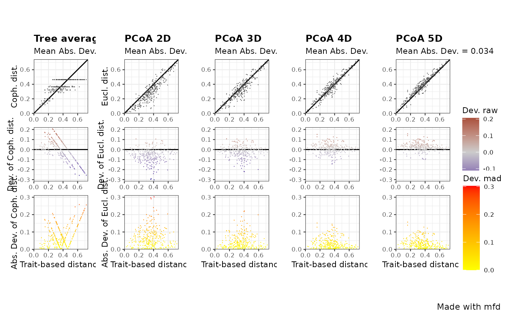

Plot functional space quality with a chosen quality metric
Source:R/plot_quality_fspaces.R
quality.fspaces.plot.RdPlot functional space quality with a chosen quality metric
Usage
quality.fspaces.plot(
fspaces_quality,
quality_metric,
fspaces_plot,
name_file = NULL,
range_dist = NULL,
range_dev = NULL,
range_qdev = NULL,
gradient_deviation = c(neg = "darkblue", nul = "grey80", pos = "darkred"),
gradient_deviation_quality = c(low = "yellow", high = "red"),
x_lab = "Trait-based distance"
)Arguments
- fspaces_quality
output from the
quality.fspacesfunction, that is a list with all data needed to illustrate quality of functional spaces based on deviation between species trait-based distance and distance in functional spaces built using PCoA (and dendrogram).- quality_metric
a character string with the name of the quality metric to illustrate. Should be one of the column names of
fspaces_quality$quality_fspaces. See help ofquality.fspacesfor the meaning of these names regarding type of deviation and scaling of distance in functional space. Default:'mad'(Mean absolute deviation).- fspaces_plot
a vector with names of functional spaces to consider. Should be a subset of the row names of
quality_fspaces$quality_fspaces. Maximum of 10 spaces allowed to keep decent plot size.- name_file
a character string with name of file to save the figure (without extension). Default:
NULLwhich means plot is displayed.- range_dist
a vector with minimum and maximum values to display for species pairwise distances (x-axis for all panels and y-axes of top panel). Default: NULL, which means range is 0 to maximum distance among all the functional spaces to plot.
- range_dev
a vector with minimum and maximum values to display for deviation to trait-based distance (y-axis of middle panel). Default: NULL, which means range is set to range of deviation among all the functional spaces to plot.
- range_qdev
a vector with minimum and maximum values to display for deviation to trait-based distance (y-axis of bottom panel). Default:NULL, which means range is from 0 to the maximum of (transformed) deviation among all the functional spaces to plot.
- gradient_deviation
a vector of 3 colors for illustrating raw deviation with
scale_colour_gradient2. The first value ('neg') is for the lowest negative deviation, the second value ('nul')is for null deviation and the third value ('pos') is for the highest positive deviation. Default gradient is from darkblue to grey to red.- gradient_deviation_quality
2 colors (named 'low' and 'high') for illustrating transformed deviation used to compute quality metric with
scale_colour_gradient2(default gradient is from yellow to red).- x_lab
a character string with title to display below X axis. Default is 'Trait-based distance'.
Value
A png file (resolution 300dpi) saved in the current working directory. Quality of each functional space is illustrated with three panels : - top row shows trait-based distance between species vs. space-based distance. - middle row shows trait-based distance vs. deviation between space-based and trait-based distances - bottom row shows trait-based distance between species vs. transformed deviation used to compute the quality metric All plots have the same X axis. All plots on a given row have the same Y axis and color palette. Type of distance in functional space (Euclidean in PCoA, Cophenetic on tree) are abbreviated, as well as type of transformation of distance (scaling) and of deviation (Absolute or Squared)
Examples
# Load Species*Traits dataframe:
data("fruits_traits", package = "mFD")
# Load Assemblages*Species dataframe:
data("baskets_fruits_weights", package = "mFD")
# Load Traits categories dataframe:
data("fruits_traits_cat", package = "mFD")
# Compute functional distance
sp_dist_fruits <- mFD::funct.dist(sp_tr = fruits_traits,
tr_cat = fruits_traits_cat,
metric = "gower",
scale_euclid = "scale_center",
ordinal_var = "classic",
weight_type = "equal",
stop_if_NA = TRUE)
#> [1] "Running w.type=equal on groups=c(Size)"
#> [1] "Running w.type=equal on groups=c(Plant)"
#> [1] "Running w.type=equal on groups=c(Climate)"
#> [1] "Running w.type=equal on groups=c(Seed)"
#> [1] "Running w.type=equal on groups=c(Sugar)"
#> [1] "Running w.type=equal on groups=c(Use,Use,Use)"
# Compute functional spaces quality to retrieve species coordinates matrix:
fspaces_quality_fruits <- mFD::quality.fspaces(
sp_dist = sp_dist_fruits,
maxdim_pcoa = 10,
deviation_weighting = "absolute",
fdist_scaling = FALSE,
fdendro = "average")
# Illustrate the quality of functional spaces:
mFD::quality.fspaces.plot(
fspaces_quality = fspaces_quality_fruits,
quality_metric = "mad",
fspaces_plot = c("tree_average", "pcoa_2d", "pcoa_3d",
"pcoa_4d", "pcoa_5d"),
name_file = NULL,
range_dist = NULL,
range_dev = NULL,
range_qdev = NULL,
gradient_deviation = c(neg = "darkblue", nul = "grey80",
pos = "darkred"),
gradient_deviation_quality = c(low ="yellow", high = "red"),
x_lab = "Trait-based distance")
